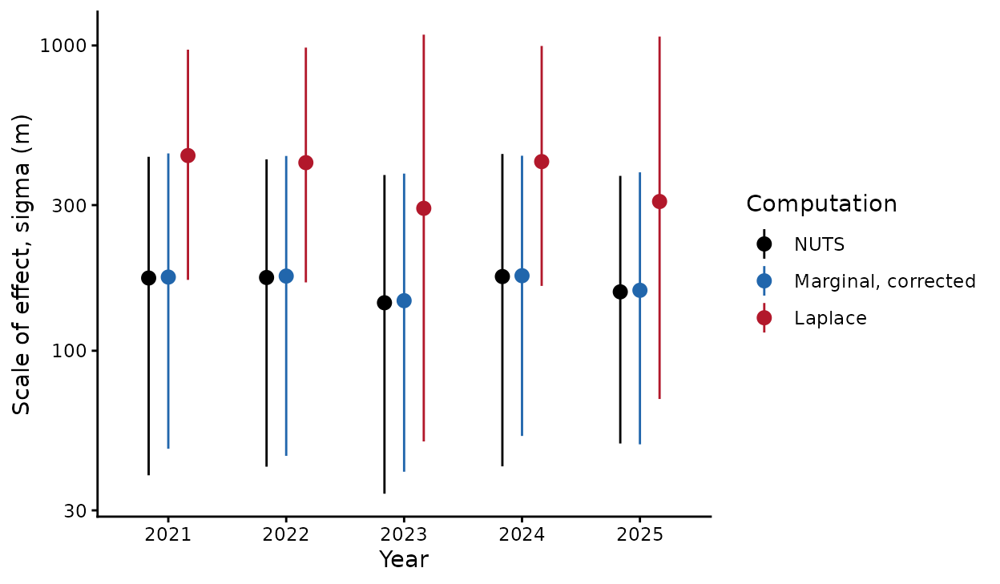

15. Choose and Check a Bayesian Computation Method
Bill Peterman
Source:vignettes/v15-bayesian-computation.Rmd
v15-bayesian-computation.RmdWhat this vignette covers
multiScale_bayes() can compute the same posterior in
several ways. The method argument changes how the answer is
computed and how long it takes. It does not change the model, the
likelihood, or the priors. A slow, exact method and a fast, approximate
one can still return different numbers, and this vignette shows how to
choose between them and how to tell when a result is safe to report.
You will check a model before fitting, run a short pilot, read its
diagnostics, compare five computations of one model, check a probability
from a fast approximation, and work through what to do when a fit
struggles. Every result shown is stored in the package, so nothing here
needs sampling software. Read
vignette("v13-bayesian-scales", package = "multiScaleR")
first for priors and model fitting.
Compare the methods
method |
What it computes | Uncertainty you get | Optional packages | Use it |
|---|---|---|---|---|
"prepare" |
Checks the formulas, data rows, priors, and landscape inputs. Fits nothing | None | None | Before every fit |
"sample" (default) |
Draws from the full posterior with NUTS, a gradient-based Markov chain Monte Carlo (MCMC) sampler | Full posterior, with chain diagnostics | RTMB, tmbstan, rstan, posterior | For results you will report |
"slice" |
Draws from the same posterior with a slice sampler written in R | Full posterior, with chain diagnostics | None to fit, posterior for diagnostics | When you cannot install the NUTS software, and for small models |
"laplace" |
Finds the peak of the posterior and fits one Gaussian curve around it | Approximate. Symmetric on the model’s internal log scale | RTMB | To explore while you build a model |
"marginal" |
Integrates the spread of one scale among groups numerically, with a Gaussian approximation for everything else | Approximate. The spread among groups can be skewed | RTMB | When sampling is too slow and the model has one such spread |
"marginal" with
control = list(correction = "importance")
|
Reweights draws from the marginal approximation against the full posterior | Targets the full posterior, with weight diagnostics | RTMB, posterior | As a check on the marginal approximation |
The posterior is the distribution of parameter values supported by the data and the priors. Sampling methods draw from it directly, in several independent runs called chains. Approximations replace it with a simpler shape that is fast to compute. The whole interface is experimental, and the importance correction most of all.
Check the software and the model
check_bayes_setup() reports whether the optional
packages for a method are installed. It installs nothing and fits
nothing.
setup <- check_bayes_setup("sample") # also "slice", "laplace", "marginal"
setup$packages[c("package", "minimum")] # packages NUTS needs, minimum versions
#> package minimum
#> 1 RTMB 2.0
#> 2 tmbstan 1.2.1
#> 3 rstan <NA>
#> 4 posterior 1.6.0setup$ready is TRUE when every listed
package loads and meets its minimum version. That says nothing about
memory or about how well a model will sample. Add cores = 2
to the call to check the processx package, which parallel
fits need.
Next, check the model itself. method = "prepare" matches
each observation to its landscape inputs, builds the formulas and
priors, and stops with an error if anything is inconsistent. It takes
well under a second.
example <- readRDS(system.file("extdata", "bayesian-annual-example.rds",
package = "multiScaleR"))
dat <- example$data # 100 counts from 25 sites over five years
inputs <- example$inputs # prepared landscape inputs, distances in meters
response <- count ~ habitat + factor(year) + (1 | site)
scales <- list(habitat = ~1 + (1 | year)) # scale of effect varies by year
priors <- list(scale_median = 250, scale_group_sd = 0.5)
prepared <- multiScale_bayes(response, inputs, dat, scales = scales,
row_id = "site_year", family = "nbinom2",
priors = priors, method = "prepare")
prepared
#> Experimental Bayesian landscape-scale model
#> Inference: prepared
#> Family: nbinom2 | observations: 100
#> Scale formulas:
#> habitat : ~1 + (1 | year)The printed object confirms the family, the number of observations, and the scale formula. No sampling has happened yet.
Run a short pilot
A short run tells you how long a full run will take and whether the sampler moves freely. Slice sampling needs no extra software, so it is a convenient first test.
pilot <- multiScale_bayes(response, inputs, dat, scales = scales,
row_id = "site_year", family = "nbinom2",
priors = priors,
method = "slice", # sampler written in R
chains = 2, # independent runs
iter = 1000, # iterations per chain; half are warmup
seed = 5212)
pilot$diagnostics$passed # did the sampler checks pass?
diagnose_bayes_scales(pilot)$parameters # checks on the quantities you report#> [1] FALSE
#> quantity group rhat ess_bulk ess_tail
#> 1 log_distance year=2021 1.002041 135.71006 232.5721
#> 2 log_distance year=2022 1.004091 146.46579 259.6545
#> 3 log_distance year=2023 1.009791 180.33941 298.7237
#> 4 log_distance year=2024 1.007655 138.36776 322.3073
#> 5 log_distance year=2025 1.007691 190.31119 282.6925
#> 6 scale_group_sd year 1.002993 289.95932 472.7959
#> 7 response_group_sd site 1.020492 48.62673 152.6421How to read the diagnostics: The pilot took 18 seconds and failed its checks, which is expected for 500 retained iterations per chain. Three numbers matter.
-
rhatcompares the chains with one another. Values near 1 mean the chains agree. The package requires 1.01 or less. -
ess_bulkandess_tailare effective sample sizes, or the number of independent draws the correlated chain is worth, for the center and the tails of the distribution. The package requires at least 100 per chain for each, which is 200 here. -
passedisTRUEonly when every parameter meets both rules. NUTS fits must also have no divergences, no tree-depth hits, and an energy statistic (E-BFMI) of at least 0.3.
fit$diagnostics checks the raw model parameters.
diagnose_bayes_scales() adds the quantities you will
report. Those are the log of each year’s scale, the spread of scales
among years (scale_group_sd), and the spread of baselines
among sites (response_group_sd). Here the site spread is
the weakest, with a bulk effective sample size of 49.
Extend the run or change the sampler
More iterations are the first remedy. The call below runs four chains of 8,000 iterations on four workers.
slice_long <- multiScale_bayes(response, inputs, dat, scales = scales,
row_id = "site_year", family = "nbinom2",
priors = priors, method = "slice",
chains = 4, iter = 8000, seed = 5213,
cores = 4) # one chain per workerThe same model was also fitted with NUTS, and that fit is stored in the example data.
nuts_fit <- multiScale_bayes(response, inputs, dat, scales = scales,
row_id = "site_year", family = "nbinom2",
priors = priors, method = "sample",
chains = 4, iter = 6000, warmup = 3000,
seed = 5211,
control = list(adapt_delta = 0.95,
max_treedepth = 12))| Run | Retained draws | Seconds | Largest Rhat | Smallest bulk ESS | Passed |
|---|---|---|---|---|---|
| Slice pilot | 1000 | 18 | 1.147 | 13 | FALSE |
| Slice, long | 16000 | 82 | 1.021 | 185 | FALSE |
| NUTS | 12000 | 145 | 1.001 | 3759 | TRUE |
How to read the table: Sixteen times as many draws brought the slice sampler close, yet its largest Rhat is still 1.021 and its smallest effective sample size is 185, short of the 400 required. Site effects are the parameters that lag. NUTS passed with fewer draws, because each of its draws is worth far more. Its smallest effective sample size is 3,759 from 12,000 draws. The slice run used four workers and the NUTS run used one, so the seconds are a record of these runs and not a benchmark.
What this means for your study. Compare samplers by effective sample size per second, not by iterations. A model with many site or year effects usually favors NUTS. Do not report a fit whose
passedflag isFALSE, even when it fails narrowly.
Use chains and cores
chains sets how many independent runs the sampler makes,
and at least two are needed for any diagnostic. iter is the
length of each chain, and warmup (half of iter
by default) is the part discarded while the sampler tunes itself.
cores sets how many R processes work at once.
| Method | Work spread across cores |
|---|---|
"sample", "slice"
|
Chains, so cores beyond the number of chains go unused |
"laplace" |
Optimizer starts (6 by default) |
"marginal" |
Optimizer starts at each grid point (3 by default) |
"marginal" with importance correction |
Optimizer starts, and evaluation of candidate draws |
Parallel work is not free. Each worker starts its own R process and
holds its own copy of the model. The two-chain pilot took 18 seconds on
one worker and 23 seconds on two, and it returned identical draws both
times because slice sampling uses the same chain seeds at any core
count. Save cores for runs that take minutes.
Use an approximation when sampling is too slow
Fit the approximations
# One Gaussian curve around the posterior peak
fast_fit <- multiScale_bayes(response, inputs, dat, scales = scales,
row_id = "site_year", family = "nbinom2",
priors = priors, method = "laplace",
laplace_draws = 2000, seed = 527001)
# Numerical integration over the spread of scales among years
marginal_fit <- multiScale_bayes(response, inputs, dat, scales = scales,
row_id = "site_year", family = "nbinom2",
priors = priors, method = "marginal",
laplace_draws = 2000, seed = 527002)
# The same, reweighted against the full posterior
corrected_fit <- multiScale_bayes(response, inputs, dat, scales = scales,
row_id = "site_year", family = "nbinom2",
priors = priors, method = "marginal",
laplace_draws = 2000, seed = 527003,
control = list(correction = "importance",
importance_df = 5,
importance_min = 65536,
importance_max = 131072,
importance_refinements = 2))
fast_fit$diagnostics # each fit stores its own numerical checkslaplace_draws sets how many draws are taken from the
approximation for summaries. More draws smooth the summaries and cannot
repair a poor approximation. method = "marginal" works only
when the model has exactly one spread of scales among groups, as
~1 + (1 | year) does here. Each method has its own checks,
stored in fit$diagnostics.
| Method |
passed requires |
|---|---|
"laplace" |
The optimizer converged (gradient_max at
most 0.0001), the curvature is valid (min_eigenvalue above
0, condition_number at most 1e12), and no second peak lies
within 2 log-posterior units (competing_modes) |
"marginal" |
The same at every grid point, a finer grid leaves the
answer unchanged (grid_converged),
competing_mass at most 0.01, and
upper_tail_mass at most 0.001 |
| Importance correction |
pareto_k at most 0.7, ess at
least 1,000, min_tail_ess at least 400,
max_weight at most 0.01, and split_cdf_error
at most 0.05 |
Compare them with the samplers
The package stores the results of those three calls, alongside the NUTS fit.
comparison <- readRDS(system.file("extdata", "bayesian-computation-example.rds",
package = "multiScaleR"))
print(comparison$availability, row.names = FALSE) # status, run time, reason
#> method status seconds reason
#> laplace eligible 0.31
#> marginal rejected 14.21 grid converged FALSE
#> nested eligible 207.30In this table nested is the importance-corrected
marginal fit. The next chunk puts the spread of scales among years from
every computation side by side.
| Computation | Own checks | Seconds | Spread among years | Lower | Upper |
|---|---|---|---|---|---|
| NUTS | Passed | 145.0 | 0.24 | 0.01 | 0.85 |
| Slice, long | Failed | 82.0 | 0.24 | 0.01 | 0.87 |
| Laplace | Passed | 0.3 | 0.62 | 0.22 | 1.80 |
| Marginal | Failed | 14.2 | 0.08 | 0.00 | 0.42 |
| Marginal, corrected | Passed | 207.3 | 0.23 | 0.01 | 0.85 |

Scale of effect in each year from three computations of the same model. Points are posterior medians and bars are 95% intervals.
How to read the output: The spread among years is on the log scale, so exponentiate it. With a NUTS median of 0.24, a year one standard deviation above the typical year has a scale 1.27 times the typical scale. Both the long slice run and the corrected marginal fit agree with NUTS to within 0.01. Laplace does not. It took 0.3 seconds and passed all of its own checks, yet its median of 0.62 is more than twice the NUTS value. Its yearly scales in the figure are shifted upward as well, to a median of 436 m in 2021 against 173 m. Because the uncorrected marginal fit failed its grid check, do not use its median of 0.08.
The gap is not peculiar to this example. In simulations of three other designs, the probability that a year’s scale fell below a set distance differed from NUTS by more than 0.05, well beyond Monte Carlo error, in 49 of 87 comparisons for Laplace fits and 39 of 71 for uncorrected marginal fits.
What this means for your study. A passed check on an approximation says the arithmetic finished cleanly. It does not say the approximation is close to the posterior. Before you report an approximate fit, compare it once with a sampler on the same model or on a subset of the data.
The corrected marginal fit matched NUTS here and took longer (207
against 145 seconds), so it offered no advantage for this model.
Summarize a corrected fit with
posterior_scales(corrected_fit, estimator = "weighted"),
which uses the importance weights directly.
The correction also tracked NUTS in simulations of eight designs with Gaussian, Poisson, binomial, or negative binomial responses. Across 5,282 scale probabilities, the largest difference from NUTS was 0.033. Matching NUTS is not the same as a calibrated interval. In one repeated-site Poisson design, 90% intervals for the first year’s scale held the true value in 39 of 48 data sets for the corrected fits and 38 of 48 for NUTS. The evidence covers those designs only.
Check one probability from an uncorrected approximation
When sampling is out of reach, diagnose_bayes_laplace()
checks one kind of number from a Laplace or uncorrected marginal fit.
That number is the probability that a year’s scale is at or below a
distance you name. The function draws a fresh, deliberately wide sample
around the approximation, reweights every draw against the full
posterior, and compares the reweighted probability with the one the
approximation gave. The function is experimental and needs the RTMB and
posterior packages.
# Probability that each year's scale is 150 m or less, and 350 m or less
check <- diagnose_bayes_laplace(fast_fit,
thresholds = list(habitat = c(150, 350)),
tolerance = 0.05, # difference that matters
candidates = 65536, # size of the fresh sample
seed = 127)
check$probabilities[, c("group", "threshold", "approximation", "reference",
"status")]Each row of check$probabilities is one year and one
threshold. Read the status column.
status |
Meaning | What to do |
|---|---|---|
"discrepancy" |
The approximation and the reweighted reference differ
by more than tolerance, beyond Monte Carlo error |
Do not report the approximate probability. Sample the model |
"within_tolerance" |
They agree within tolerance for this year
and threshold |
The approximate probability can be reported, for this threshold only |
"unresolved" |
The reference is too imprecise, or overlaps the posterior too poorly, to decide | Treat the probability as unchecked. Raise
candidates, or sample |
In 35 simulated data sets, the check flagged 54 of 135 real
differences for Laplace fits and 21 of 67 for marginal fits, and it
never marked a real difference as within tolerance. Most checks, 448 of
630, were unresolved, including every one in models with repeated site
effects. Expect "unresolved" often, and read it as “not
checked”, not as “close enough”.
Check the precision of the numbers you report
A credible interval describes what the data leave uncertain.
Monte Carlo error describes how precisely a finite number of
draws pins down that interval. diagnose_bayes_scales()
reports it as mcse, the Monte Carlo standard error of each
quantile.
precision <- diagnose_bayes_scales(slice_long)
precision$quantiles # median and interval limits, each with its mcse#> quantity group probability estimate mcse
#> 1 log_distance year=2021 0.025 3.635022 0.03353090
#> 2 log_distance year=2021 0.500 5.128946 0.01705650
#> 3 log_distance year=2021 0.975 6.036441 0.02734664How to read the output: Estimates for a scale are
natural logs of meters. For 2021 the lower limit is 3.64, or 38 m, with
an mcse of 0.034. An error of that size on the log scale is
about 3% of the distance, so repeating the run would move this limit by
a meter or two. Compare that with the credible interval itself, which
spans 38 to 418 m. The computation is far more precise than the data are
informative.
For a specific threshold, diagnose_bayes_probabilities()
reports the posterior probability that a scale is at or below it.
diagnose_bayes_probabilities(slice_long,
thresholds = list(habitat = c(100, 250)), # meters
mcse_target = 0.005)$probabilities#> group threshold estimate mcse precision_target_met
#> 1 year=2021 100 0.1940000 0.006921826 FALSE
#> 2 year=2021 250 0.7554375 0.012581750 FALSEIn a report. “The posterior probability that the 2021 scale of effect was 250 m or less was 0.76 (Monte Carlo standard error 0.013).” The run missed the requested precision of 0.005, so report two decimal places and no more.
Both functions need the original chains. The stored example fits keep
only 2,000 thinned draws, so they return available = FALSE
with the reason.
Plan for run time and memory
- Time a pilot and scale up from it. The pilot here ran about 113 iterations per second. At that rate, four chains of 8,000 iterations need about 5 minutes on one worker.
- A fitted object keeps its chains. The long slice fit held 4000 iterations of 40 parameters in each of 4 chains and occupied 10 MB.
-
Prediction can need more than fitting.
predict()computes one value per posterior draw and observation, at 8 bytes each. With 2,000 draws, a map of 100,000 cells needs 1.6 GB. Lowerdraws, or predict in blocks when you need only a summary for each location. -
Each worker holds a copy of the model. Memory use
rises with
cores.
What to do when a fit struggles
| What you see | What to try |
|---|---|
diagnostics$passed is FALSE
with a large rhat or small effective sample size |
Raise iter. If a slice fit still fails,
switch to method = "sample"
|
| A NUTS fit reports divergences or tree-depth hits | Raise adapt_delta (default 0.9) or
max_treedepth (default 12) in control. The
stored fits used adapt_delta of 0.95 and 0.99 |
| A Laplace fit stops with an error or warns of competing modes | Add starts with
control = list(starts = 10, iter.max = 1500), or
sample |
A marginal fit has
grid_converged = FALSE
|
Refine the grid with
control = list(max_grid = 257), or sample |
| A corrected fit fails its weight checks | Raise importance_min and
importance_max, set importance_df = 5 for
heavier tails, or sample |
diagnose_bayes_laplace() reports
"discrepancy" or "unresolved" for a
probability you need |
Sample the model before you report that probability |
method = "marginal" stops because the
model has more than one spread of scales among groups |
Use "sample", "slice", or
"laplace"
|
Every check passes, but much of a scale’s posterior
lies below min_D or above max_D
|
The data say little about that scale. Review the priors
and max_D in
vignette("v13-bayesian-scales", package = "multiScaleR")
|
Keep the model, priors, and data fixed while you compare computations. If a check fails, change the computation and leave the thresholds alone.
Quick reference
# 1. Check the software and the model
check_bayes_setup("sample")
prepared <- multiScale_bayes(response, inputs, dat, scales = scales,
row_id = "site_year", family = "nbinom2",
priors = priors, method = "prepare")
# 2. Short pilot: time it and read the diagnostics
pilot <- multiScale_bayes(response, inputs, dat, scales = scales,
row_id = "site_year", family = "nbinom2",
priors = priors, method = "slice",
chains = 2, iter = 1000, seed = 5212)
pilot$diagnostics$passed # FALSE: extend or change sampler
diagnose_bayes_scales(pilot)$parameters # Rhat and ESS for reported quantities
# 3. Full run with NUTS
nuts_fit <- multiScale_bayes(response, inputs, dat, scales = scales,
row_id = "site_year", family = "nbinom2",
priors = priors, method = "sample",
chains = 4, iter = 6000, warmup = 3000,
seed = 5211,
control = list(adapt_delta = 0.95,
max_treedepth = 12))
summary(nuts_fit)$diagnostics # passed, divergences, Rhat, ESS
# 4. Precision of what you report (needs the original chains)
diagnose_bayes_scales(nuts_fit)$quantiles # interval limits with their mcse
diagnose_bayes_probabilities(nuts_fit,
thresholds = list(habitat = c(100, 250)),
mcse_target = 0.005)$probabilities
# 5. A fast approximation. Compare it with a sampler before you report it
fast_fit <- multiScale_bayes(response, inputs, dat, scales = scales,
row_id = "site_year", family = "nbinom2",
priors = priors, method = "laplace",
laplace_draws = 2000, seed = 527001)
fast_fit$diagnostics # numerical checks only
diagnose_bayes_laplace(fast_fit, thresholds = list(habitat = c(150, 350)),
candidates = 65536, seed = 127)$probabilities
# "unresolved" means not checkedSummary of key functions
| Function | Purpose |
|---|---|
check_bayes_setup() |
Report whether the optional packages for a method are installed |
multiScale_bayes() |
Fit the model. method chooses the
computation |
summary() |
Report estimates and the stored diagnostics of a fit |
diagnose_bayes_scales() |
Check chain agreement and Monte Carlo error for the scales and spreads you report |
diagnose_bayes_probabilities() |
Report the probability that a scale is at or below a threshold, with its Monte Carlo error |
diagnose_bayes_laplace() |
Check such a probability from an uncorrected approximation against a reweighted reference |
posterior_scales() |
Summarize scales in map units.
estimator = "weighted" uses importance weights |
See also
-
vignette("v13-bayesian-scales", package = "multiScaleR"), priors, model fitting, and reading a Bayesian fit. -
vignette("v14-bayesian-prediction", package = "multiScaleR"), predicting new sites, new years, and totals. -
vignette("v09-estimates-and-intervals", package = "multiScaleR"), what each interval includes and leaves out. -
vignette("v01-quickstart", package = "multiScaleR"), the core workflow. - The help page
?"multiScaleR-glossary"defines the terms used in these vignettes.